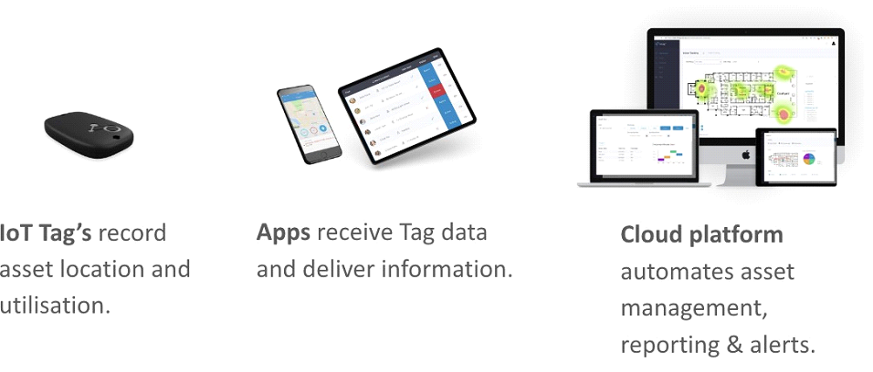
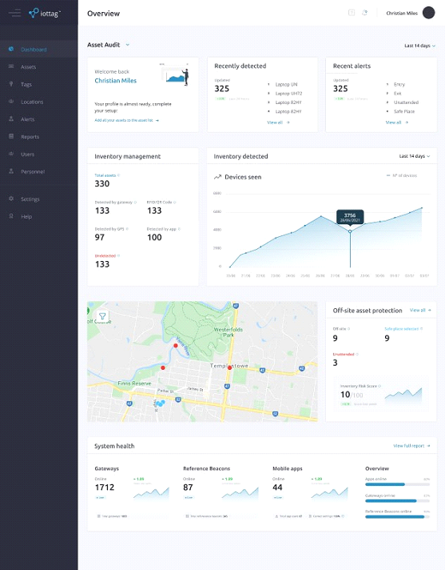
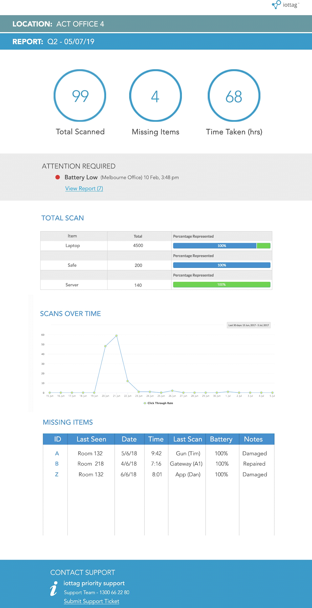

Automated Asset Management & Protection
- Automated management
- Real-time auditing
- Asset monitoring & location tracking
- Asset protection and risk scoring
- Notifications & alerts
- Collaborative asset management
- Internal and external map view
- End of day reporting

The Problem
With greater numbers of tools and equipment traveling off site for extended periods, it is becoming more challenging to maintain visibility of missing assets.The Solution
Atlas automates the management of your assets so you know what you have, who has it, where it is and most importantly what is missing.How it works
Real time inventory management The Atlas system continuously scans assets to record tools and equipment which are on site and which area they are in eg. tool store, repair bay, all in real-time. At a tenth of a second the Atlas system can detect assets leaving the site and automatically attribute a ‘checked out’ status to the asset. Knowing who has the asset Quick review of CCTV footage will provide custodian information based on time of departure. Alternatively, vehicles can be tagged to confirm which departed with assets or staff can carry a key fob to provide highly accurate data. Returning an asset Assets that return to site are automatically checked back in, the asset risk score is reset to zero and the system stands down alerts. Automating asset management End of day reports are automatically delivered to management teams via email to provide pertinent information regarding missing assets at a glance. This information is time critical as it enables staff to recover the asset, and prevents escalating risk.Atlas Management Dashboard
All the information you need to manage thousands of assets at a glance.
Asset Audit Report
Automated daily reports enable teams to identify risk before it escalates.
Book a demo. Get in touch to arrange a demo of the system followed by a tailored demo kit for your evaluation.